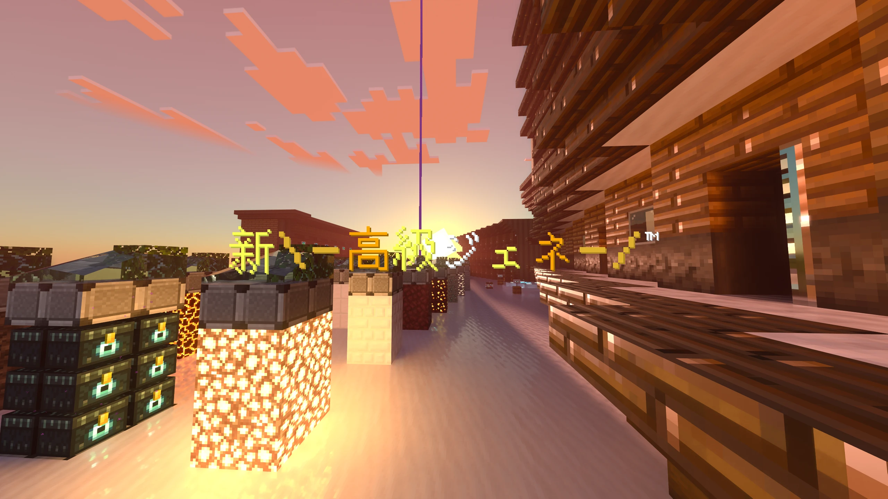

\-Welcome to-/ようこそ!
\-Kokyujene official site!-/新 高級ジェネ 公式サイトへ!

総訪問回数
Loading...\-Server Status-/
サーバー状態
読み込み中...
時々、更新が遅れたり、サーバーを開かないこともあります。
その際はすみません。どうかご了承ください。
\-Official Discord Server-/
公式Discord
公式Discordサーバーに参加
\-Server Advantages-/
このサーバーの長所
やりこみ要素が豊富です。称号だけでも8個あります!(現在時点)
称号以外にも、実績やジェネの通貨、見栄えの良い建築などで、モチベーションがとてもあがります!
これはマイクラだけにとどまらず、オープンチャットを展開しています!少し下にスクロールするとリンクがあります。是非参加してみてください!

\-Other Services-/
公式Discordサーバー
その他サービス
マインクラフト以外のサービスで例えばこのサイト。
他にもX(旧Twitter)やオープンチャットもあります!
オープンチャットではライブトークで、雑談したり、投票を行ったり、今日、いつ開くかや遅れるなどの知らせをあらかじめ見ることができます!
公式Discordサーバー
okaki5013を許してはいけません...。
\-Server rules-/
サーバーのルールなど
このサイトには高級ジェネのルールがあります!内容はほとんど変わりません!!少し整理されているので多少は見やすいと思います。
ルール
プライバシーポリシー